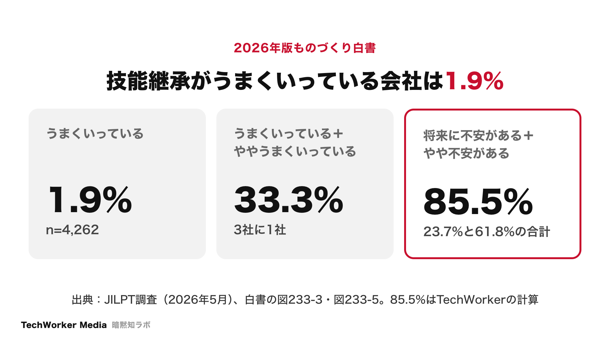
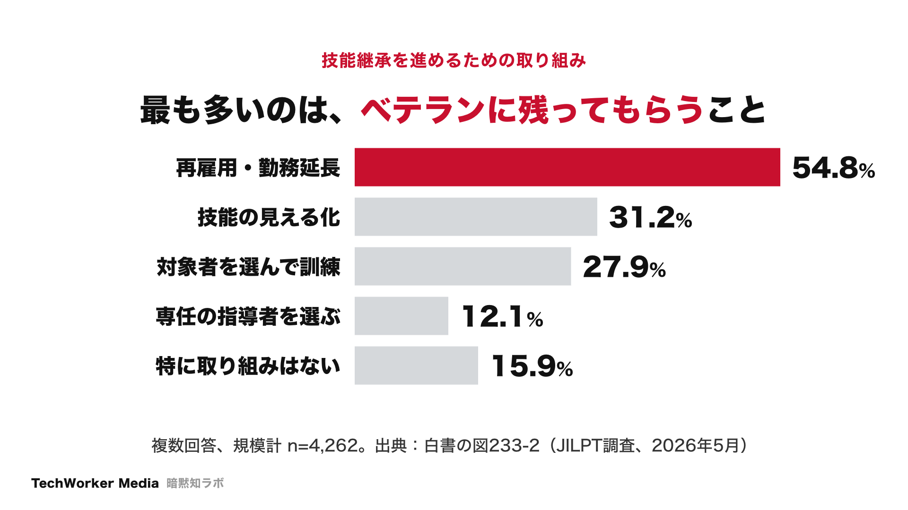
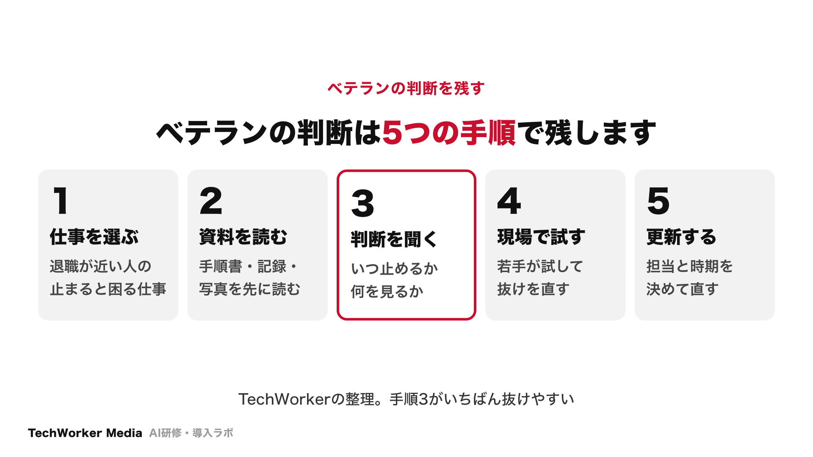
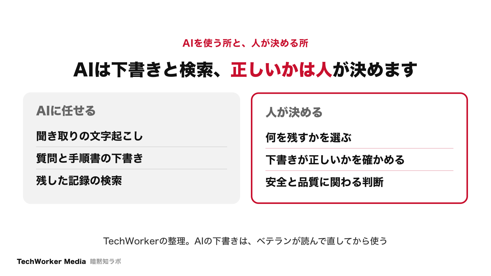

技術承継・技能伝承は、ベテランが持つ技と判断を、次の担当に引き継ぐ取り組みです。2026年5月に公表された2026年版ものづくり白書は、労働政策研究・研修機構（JILPT）の調査で今の状況を示しています。
- 進み具合：技能継承がうまくいっている会社は1.9%で、ややうまくいっている会社と合わせても33.3%です。
- 取り組み：最も多い取り組みは再雇用や勤務延長で、54.8%の会社がベテランに働き続けてもらっています。
- 引き継ぐもの：トラブルや突発的なことに対応できる力を65.2%が挙げる一方、技能を言語化して人に伝える力は33.4%です。
原文（日本語）「技能継承が「うまくいっている」と回答した企業は1.9%となっており、「ややうまくいっている」と合わせて33.3%となっている（図233-3）。」
白書の数字で今の状況を確かめたうえで、取り組みごとに残る物と抜ける物、ベテランの判断を聞き取って残す5つの手順、AIを使う所と人が決める所をまとめます。
技術承継・技能伝承は、いまどのくらい進んでいますか？
うまくいっている会社は1.9%、ややうまくいっている会社を合わせて33.3%です。将来に不安がある会社は、やや不安がある会社を含めて85.5%です。

数字の元はJILPTの「ものづくり産業における人材確保・定着と技能継承に関する調査」で、白書は資料の日付を2026年5月としています。技能継承の状況に答えた会社は4,262社でした。
| 技能継承はうまくいっているか（図233-3） | |
|---|---|
| うまくいっている | 1.9% |
| ややうまくいっている | 31.4% |
| あまりうまくいっていない | 55.6% |
| うまくいっていない | 10.0% |
| 将来の技能継承の考え（図233-5） | |
| 不安がある | 23.7% |
| やや不安がある | 61.8% |
| あまり不安はない | 12.7% |
出典：2026年版ものづくり白書 第1部第2章第3節の図233-3・図233-5（資料はJILPT、n=4,262）。不安はないと無回答は各0.9%、図233-3の無回答は1.0%
不安の理由（図233-6、不安がある・やや不安がある3,641社、複数回答）は、熟練技能者の高齢化・退職が進んでいることが63.0%で最も多く、若手が採用できない（57.0%）、中堅従業員が不足している（51.9%）が続きます。教える側が減り、教わる側も足りていない状況です。
白書が使う言葉は技能継承です。検索では技術承継・技術伝承・技能伝承とも書かれ、指す範囲は書き手によって違います。この記事で扱うのは、作業の技と判断の両方を次の担当へ引き継ぐことです。手順書に書かれず人の頭の中にある判断や勘は暗黙知と呼ばれ、意味と残し方は暗黙知とはで説明しています。
何を引き継ぐ必要がありますか？
上位は正確・精緻に作業できる技（66.3%）と、トラブルや突発的なことが起きた時に対応できる力（65.2%）です。手順の外で何を見てどう決めるかの力も、多くの会社が挙げています。
| 技能継承が必要と考えているもの（図233-1） | 割合 |
|---|---|
| 正確・精緻に作業できる技 | 66.3% |
| トラブルや突発的なことが起きた時に対応できる力 | 65.2% |
| 加工・作業方法を応用するなど創意工夫ができる力 | 59.7% |
| 最適な加減に作業の内容や状況を調整できるカン・コツ | 52.6% |
| 事故や労働災害を未然に防ぐ力 | 42.1% |
| 継承すべき技能を言語化して人に伝える力 | 33.4% |
| 新しいことを発想できる独創性 | 21.6% |
出典：2026年版ものづくり白書 第1部第2章第3節の図233-1（資料はJILPT、規模計 n=4,342、複数回答）
トラブル対応、創意工夫、カン・コツの3つは、決まった手順の外で判断する力です。同じ調査で、技能を言語化して人に伝える力を挙げた会社は33.4%で、従業員300人以上では44.1%でした。
手順書に書きやすいのは正確に作業する技の手順の部分です。トラブル時の判断とカン・コツは書きにくいため、後で述べる聞き取りで言葉にする所から始めます。
技能継承の方法には何があり、それぞれ何が残りますか？
白書の調査で多い取り組みは再雇用・勤務延長（54.8%）、技能の見える化（31.2%）、対象者を選んでの訓練（27.9%）です。方法ごとに残る物と抜ける物が違うので、組み合わせて使います。

| 取り組み（図233-2） | 割合 | 残る物 | 抜けやすい物 |
|---|---|---|---|
| 再雇用や勤務延長などにより高年齢者従業員に継続して勤務してもらう | 54.8% | 現場で聞ける人 | その人が辞めると、判断も一緒になくなる |
| 継承すべき技能の見える化（テキスト化・マニュアル化・デジタル化）を図る | 31.2% | 手順と基準の文書 | 例外のときの判断と、そうする理由 |
| 技能継承の対象となる者を選抜して訓練する | 27.9% | 選ばれた人に移った技 | 選ばれた人のほかには広がりにくい |
| 技能継承専任の指導者を選抜する | 12.1% | 教える時間と役目 | 指導者1人の時間で、教えられる量が決まる |
| 特に取組は行っていない | 15.9% | － | － |
割合の出典：2026年版ものづくり白書 第1部第2章第3節の図233-2（資料はJILPT、規模計 n=4,262、複数回答）。残る物と抜けやすい物はTechWorkerの整理
うまくいっている理由（図233-4、うまくいっている・ややうまくいっている1,421社、複数回答）の最多は計画的にOJTを実施していることで40.4%、従業員300人以上の会社では64.8%です。うまくいっている会社は人から人へ教える場を計画して作っています。
技能継承の円滑化を目的にデジタル技術を使う会社は21.7%です（図233-7、n=4,342）。その会社が使う道具は次の表のとおりです。
| 使っているデジタル技術（図233-8） | 割合 | 残る物 | 抜けやすい物 |
|---|---|---|---|
| デジタル手順書・電子マニュアル | 57.2% | 手順と基準 | 例外のときの判断 |
| 動画によるマニュアル作成・共有 | 41.7% | 手つきと順序 | 何を見て動きを変えているか |
| AI（画像・言語認識技術、生成AIを含む） | 35.1% | 記録を探して答える仕組み | 記録に書かれていない判断 |
| センサー | 29.9% | 温度や動きなどの数値 | 数値をどう読んで決めるか |
割合の出典：2026年版ものづくり白書 第1部第2章第3節の図233-8（技能継承の円滑化にデジタル技術を使う943社、複数回答）。残る物と抜けやすい物はTechWorkerの整理
AIを使う割合は、従業員300人以上の会社で65.6%です。効果（図233-9）は、継承すべき技術の見える化・標準化が77.8%、教育にかかる時間の短縮が55.4%で、あまり効果はみられないは2.5%でした。
聞き取りで書き出した仕事の流れを、担当と工程ごとに書き込む空の型は、下の枠から受け取れます。設備の異常の一次対応を描いた製造の例を含め、6つの部署の例が入っています。
ベテランの判断を残すには、どう進めますか？
仕事を選ぶ、資料を読む、判断を聞く、現場で試す、更新するの5つの手順で進めます。抜けやすいのは判断と例外を聞く手順です。

- 仕事を選ぶ：全部を一度に残そうとせず、仕事を1つに絞ります。退職や異動が近い人の仕事のうち、止まると出荷や安全に響く物が先です。白書で不安の理由の最多は高齢化・退職（63.0%）なので、退職の予定から逆に数えて日程を組みます。
- 資料を読む：手順書、作業の記録、不具合の記録、写真や動画を集め、聞き取りの前に読みます。聞き取りの時間を、書かれていない所の質問に使うためです。
- 判断を聞く：実物か記録を前にして、過去のトラブルの1件など具体的な場面から聞きます。聞くことの例は下の5つです。
- 現場で試す：書いた手順で若手が作業し、ベテランが横で見ます。若手が止まった所と聞き返した所が、書けていない判断です。
- 更新する：書き直す時期は、設備、材料、取引先の条件が変わったときです。直す担当と見直す日を決め、古い手順書には日付を残します。
手順3で聞くことの例です。
- この作業を止めるのは、どんなときですか。
- いつもと違うと気づくのは、何を見たとき、何を聞いたときですか。
- 新人がよく間違えるのは、どこですか。
- 手順書と違うやり方をするのは、どんなときですか。理由は何ですか。
- 迷ったときは、誰に何を確かめますか。
TechWorkerのギョウムズAIも、資料を先に読んでから判断を聞く順で進めます。公式ページによると、手元の資料から業務図の下書きを作り、判断と例外に絞った8つの質問で確かめます。初期診断は14日間で、会社の負担は質問票に1時間、確認会に2時間の計3時間以内です。AIに任せる工程は過去の実例30件で確かめ、すべての件を正しく出力できた工程から選んでいます。
AIはどこに使い、人は何を決めますか？
文字起こし、質問と手順書の下書き、残した記録の検索はAIに任せられます。何を残すか、下書きが正しいか、安全と品質に関わる判断は人が決めます。

| 場面 | AIに任せる所 | 人が決める所 |
|---|---|---|
| 聞き取り | 質問の下書き、録音の文字起こし、要点の書き出し | 何を聞くかを選ぶ。話の裏を記録で取る |
| 手順書 | 文字起こしから手順の下書きを作る。言い回しをそろえる | ベテランが読み、違う所を直して承認する |
| 検索 | 残した記録から答え、元の記録を示す | 記録に無い問いは、ベテランか責任者に回す |
| 更新 | 新しい記録と手順書の違う所を挙げる | 直すかどうかを決め、版と日付を残す |
TechWorkerの整理
生成AIは、聞き違えたり記録に無いことをもっともらしく書いたりすることがあります。そのため安全に関わる手順は、ベテランと現場の責任者が読んで承認してから使います。
社内の技術情報をAIに入れる前に確かめるのは、会社が契約したAIの設定と社内の規程です。主なAIの法人契約の違いは生成AIの法人契約の比較にまとめています。残した記録をAIが答える前に読む仕組みは、Company Brain（会社の記憶）とはで説明しています。
聞き取りから業務図を描き、AIに任せる工程を決める流れの解説は、AI ReadyとはとAIに任せる業務の決め方です。製造の現場に限らず、1人しかできない事務や営業の仕事を引き継ぐ手順と確かめ方は、業務の属人化を解消する方法にまとめています。
よくある質問
ものづくり白書が使う言葉は技能継承です。検索では技術承継・技術伝承・技能伝承とも書かれ、指す範囲は書き手によって違います。この記事では、作業の技と判断の両方を次の担当へ引き継ぐことを扱っています。
白書の調査で、うまくいっている・ややうまくいっていると答えた1,421社が挙げた理由の最多は、計画的にOJTを実施していることで40.4%です。指導者と指導を受ける側のコミュニケーションがよく図られていること（34.9%）、十分な時間をかけていること（29.7%）が続きます。
手順と手つきは残りますが、なぜそうするか、いつ止めるかの判断は抜けやすくなります。判断と例外を聞き取って書き足し、若手が試して抜けを直す手順を足します。
答えは、会社が契約したAIの設定と社内の規程で変わります。入れた内容を学習に使うか、どこに保存するか、誰が使えるかを、使う前に確かめます。安全に関わる手順で使えるのは、人が読んで承認したAIの下書きだけです。
白書の調査では技能を習得した者への褒賞・報奨（8.7%）や、熟練技能者に特別な資格や肩書きを与えること（9.9%）を挙げた会社もあります。聞き取りの前に資料を読んで質問を絞り、過去のトラブルの1件など、具体的な場面から聞きます。
退職や異動が近い人の仕事のうち、止まると困る物を1つ選びます。その仕事の手順書と記録を集めて読み、判断と例外を聞く日を決めます。
次の一歩は何から始めればよいですか？
退職や異動が近い人の仕事を1つ選ぶところから始めます。
- 止まると困る仕事を1つ選び、引き継ぐ相手と担当の管理職を決めます。
- 集めて読むのは、その仕事の手順書、作業の記録、不具合の記録です。
- 上の5つの質問をもとに、判断と例外を聞く日を決めます。
出典と確認範囲
確認日：2026年11月23日。白書の数字は経済産業省のサイトの本文PDF（第1部第2章第3節、57〜64ページ）の図から読み取りました。調査の時期・対象の選び方・回答の集め方は、この節に書かれておらず、この記事では確かめていません（図の資料の欄は2026年5月）。85.5%は2つの回答の合計で、TechWorkerの計算です。残る物と抜けやすい物、5つの手順、AIと人の分担はTechWorkerの整理です。ギョウムズAIの進め方は公式ページに書かれていることだけを使いました。
- 経済産業省「2026年版ものづくり白書」の掲載ページ（2026年5月29日）
- 経済産業省・厚生労働省・文部科学省「2026年版ものづくり白書」第1部第2章第3節 ものづくり企業における人材確保及び定着並びに技能継承（PDF）（57〜64ページ、図233-1〜図233-9。資料はJILPT「ものづくり産業における人材確保・定着と技能継承に関する調査」）
- 厚生労働省「2026年版ものづくり白書 概要」（PDF）（2026年5月）
- TechWorker「ギョウムズAI」